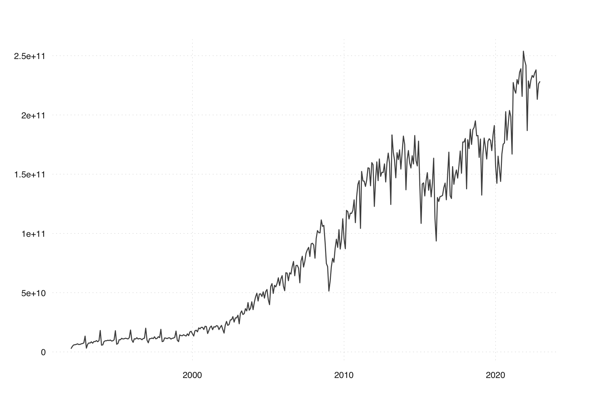
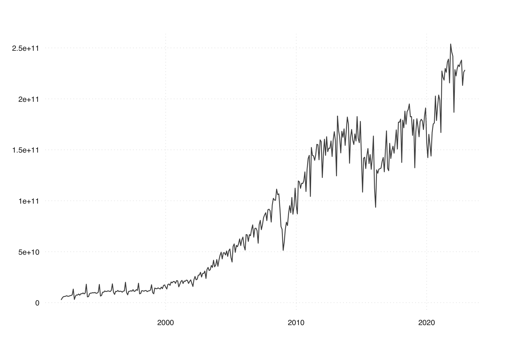
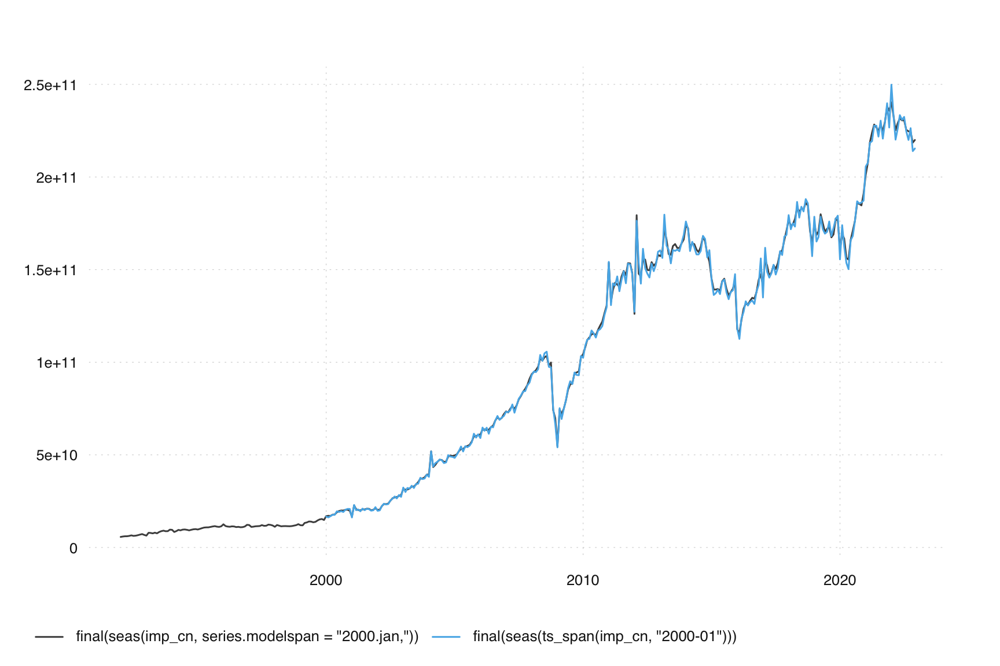

library(tsbox)
stopifnot(packageVersion("seasonalbook") >= "0.0.2")
library(seasonalbook)
library(seasonal)
ts_plot(imp_cn)
Some series have seasonal breaks. Apart from visual inspection of the unadjusted series, a look at monthplot() is usually helpful. If there are seasonal breaks, this leads to a jump in the SI-ratio.
We previously used the imports of goods to China, as series that seem to have a pretty obvious seasonal break.
Chinese imports are included as an example series in seasonal, both with and without the official seasonal adjustment.
library(tsbox)
stopifnot(packageVersion("seasonalbook") >= "0.0.2")
library(seasonalbook)
library(seasonal)
ts_plot(imp_cn)
The series has a very different seasonal pattern before 2000. In our previous example, we simply cut the data and focused on the later period.
ts_span(imp_cn, start = 2000)
#> Jan Feb Mar Apr May
#> 2000 15258000000 13428000000 17806000000 18355000000 16966000000
#> 2001 15545000000 18226000000 20773000000 21859000000 18809000000
#> 2002 18970000000 15918000000 22486000000 25753000000 22435000000
#> 2003 31016000000 23780000000 32549000000 34601000000 31604000000
#> 2004 35710000000 42020000000 46480000000 49530000000 42980000000
#> 2005 44260000000 39900000000 55210000000 57660000000 49400000000
#> 2006 55497000000 51684000000 66857000000 66491000000 60110000000
#> 2007 70726000000 58358000000 76686000000 80760000000 71644000000
#> 2008 90230000000 79130000000 95800000000 102390000000 100770000000
#> 2009 51375000000 60058000000 71886000000 78987000000 75689000000
#> 2010 95517000000 87110000000 119465000000 118434000000 112213000000
#> 2011 144591000000 104270000000 152310000000 144370000000 144120000000
#> 2012 122813000000 146394000000 160395000000 144581000000 162863000000
#> 2013 159156000000 124450000000 183059000000 168619000000 162160000000
#> 2014 175138000000 136846000000 162257000000 169980000000 159537000000
#> 2015 140561000000 108485000000 141719000000 142701000000 131646000000
#> 2016 112591000000 93633000000 130313000000 126998000000 130996000000
#> 2017 131890000000 129500000000 156380000000 141490000000 149230000000
#> 2018 180142000000 137630000000 179100000000 171650000000 187950000000
#> 2019 179670000000 132371000000 166867000000 180532000000 172773000000
#> 2020 156910000000 142327000000 165213108000 154900580000 143886746000
#> 2021 198640212000 166975331000 227336197000 221063587000 218382769000
#> 2022 241914340000 186832863000 228704260000 222500588000 229490725000
#> Jun Jul Aug Sep Oct
#> 2000 20300000000 19490000000 20785000000 20713000000 18943000000
#> 2001 21252000000 20957000000 22162000000 21851000000 18902000000
#> 2002 23094000000 26988000000 27206000000 29794000000 25197000000
#> 2003 32336000000 36514000000 34621000000 41652000000 35193000000
#> 2004 48890000000 48980000000 46820000000 50720000000 45440000000
#> 2005 56210000000 54900000000 57780000000 62570000000 56050000000
#> 2006 66808000000 65714000000 71970000000 76342000000 64298000000
#> 2007 76469000000 83347000000 86224000000 88263000000 80547000000
#> 2008 100470000000 111412000000 105999000000 106792000000 92748000000
#> 2009 87540000000 95150000000 88243000000 103199000000 86848000000
#> 2010 117153000000 116888000000 119475000000 128356000000 109107000000
#> 2011 139700000000 145020000000 155390000000 154990000000 140230000000
#> 2012 148199000000 151629000000 151467000000 158696000000 143448000000
#> 2013 146979000000 168160000000 162321000000 170556000000 154341000000
#> 2014 155223841100 165590000000 158629387300 182635508000 161461228100
#> 2015 144347000000 151292000000 136473000000 145317000000 130903000000
#> 2016 131447000000 132051000000 138601000000 142503000000 128420000000
#> 2017 153560000000 146690000000 157090000000 169570000000 150810000000
#> 2018 175113000000 187516000000 189440000000 195000000000 182375000000
#> 2019 162817000000 177758000000 179959655000 178474843000 169898075000
#> 2020 167152978000 175301874000 176333799000 202759047000 178739425000
#> 2021 229890607000 226073489000 235984248000 238979506000 215681597000
#> 2022 233322854000 231696993000 235527165000 238011751000 213217901000
#> Nov Dec
#> 2000 21641000000 21414000000
#> 2001 20846000000 22390000000
#> 2002 28735000000 28734000000
#> 2003 36893000000 42336000000
#> 2004 50970000000 52680000000
#> 2005 61660000000 64380000000
#> 2006 72926000000 73097000000
#> 2007 91203000000 91723000000
#> 2008 74657000000 72046000000
#> 2009 94691000000 112349000000
#> 2010 130970000000 141466000000
#> 2011 159770000000 158020000000
#> 2012 159776000000 167805000000
#> 2013 168390000000 182165000000
#> 2014 156966500000 177900668700
#> 2015 142616000000 163506000000
#> 2016 149317000000 168595000000
#> 2017 177170000000 177112000000
#> 2018 182670000000 164190000000
#> 2019 183411013000 191057245000
#> 2020 192673058000 203753955000
#> 2021 253813881000 246035373000
#> 2022 226252602000 228066200000Back then, we said that adjusting the whole series in one step is possible, but for good results one should manually model the seasonal break. Let’s do this now.
In part, the seasonal break is visible in the series. It is more straightforward to spot in the monthplot of the series:
This makes it obvious that there were very strong December effects before 2000. We don’t know anything about the series, but we can speculate that prior to 2000, custom receipts were counted when they were handed in (at the end of the year), rather than at the date of import.
A formal test of a seasonal break can be performed by including regression.variables = "seasonal/1999.jan//" into the specification. By default, seasonal outliers are removed from the final series. Therefore, this can be used to model a seasonal break. Modeling a seasonal break is usually preferable to a separation of the time series in two parts.
In many structural breaks, restricting series.modelspan may be the easiest way to deal with such series. Restricting the model span, uses only part of the series for model estimation, but applies seasonal adjustment to the whole series:
summary(seas(imp_cn, series.modelspan = "2000.jan,"))
#>
#> Call:
#> seas(x = imp_cn, series.modelspan = "2000.jan,")
#>
#> Coefficients:
#> Estimate Std. Error z value Pr(>|z|)
#> AO2001.Jan -0.261726 0.043878 -5.965 2.45e-09 ***
#> AO2004.Feb 0.218728 0.042608 5.133 2.84e-07 ***
#> LS2008.Nov -0.327482 0.047759 -6.857 7.03e-12 ***
#> AO2009.Jan -0.280528 0.042369 -6.621 3.56e-11 ***
#> AO2011.Jan 0.153783 0.042806 3.593 0.000328 ***
#> AO2012.Jan -0.169644 0.043482 -3.901 9.56e-05 ***
#> AO2012.Feb 0.174648 0.043120 4.050 5.11e-05 ***
#> LS2016.Jan -0.229816 0.047847 -4.803 1.56e-06 ***
#> Weekday 0.006700 0.000806 8.313 < 2e-16 ***
#> AR-Nonseasonal-01 -0.426105 0.054515 -7.816 5.44e-15 ***
#> MA-Seasonal-12 0.794516 0.040311 19.710 < 2e-16 ***
#> ---
#> Signif. codes: 0 '***' 0.001 '**' 0.01 '*' 0.05 '.' 0.1 ' ' 1
#>
#> SEATS adj. ARIMA: (1 1 0)(0 1 1) Obs.: 372 Transform: log
#> AICc: 1.258e+04, BIC: 1.262e+04 QS (no seasonality in final): 0
#> Box-Ljung (no autocorr.): 31.39 Shapiro (normality): 0.9949
summary(seas(ts_span(imp_cn, "2000-01")))
#>
#> Call:
#> seas(x = ts_span(imp_cn, "2000-01"))
#>
#> Coefficients:
#> Estimate Std. Error z value Pr(>|z|)
#> AO2001.Jan -0.261726 0.043878 -5.965 2.45e-09 ***
#> AO2004.Feb 0.218728 0.042608 5.133 2.84e-07 ***
#> LS2008.Nov -0.327482 0.047759 -6.857 7.03e-12 ***
#> AO2009.Jan -0.280528 0.042369 -6.621 3.56e-11 ***
#> AO2011.Jan 0.153783 0.042806 3.593 0.000328 ***
#> AO2012.Jan -0.169644 0.043482 -3.901 9.56e-05 ***
#> AO2012.Feb 0.174648 0.043120 4.050 5.11e-05 ***
#> LS2016.Jan -0.229816 0.047847 -4.803 1.56e-06 ***
#> Weekday 0.006700 0.000806 8.313 < 2e-16 ***
#> AR-Nonseasonal-01 -0.426105 0.054515 -7.816 5.44e-15 ***
#> MA-Seasonal-12 0.794516 0.040311 19.710 < 2e-16 ***
#> ---
#> Signif. codes: 0 '***' 0.001 '**' 0.01 '*' 0.05 '.' 0.1 ' ' 1
#>
#> SEATS adj. ARIMA: (1 1 0)(0 1 1) Obs.: 276 Transform: log
#> AICc: 1.258e+04, BIC: 1.262e+04 QS (no seasonality in final): 0
#> Box-Ljung (no autocorr.): 31.39 Shapiro (normality): 0.9949
ts_plot(
final(seas(imp_cn, series.modelspan = "2000.jan,")),
final(seas(ts_span(imp_cn, "2000-01")))
)
For some reason, this works better with X11 than with SEATS